Home / Countries / Titian – A Great Master of the Portrait
Titian – A Great Master of the Portrait
The Venetian painter who gave the Renaissance portrait new authority, atmosphere and humanity.
Two portraits of Titian
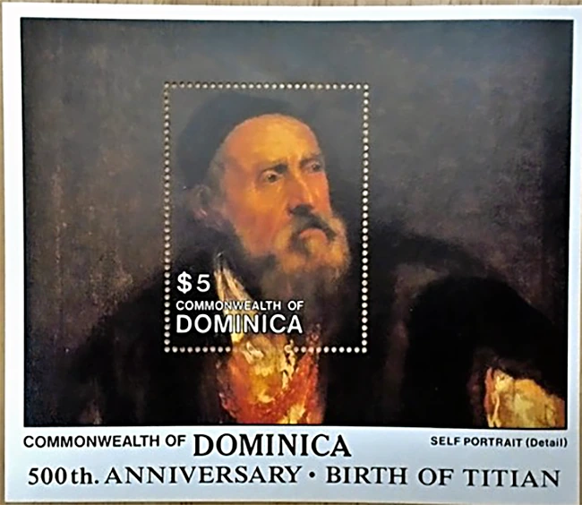
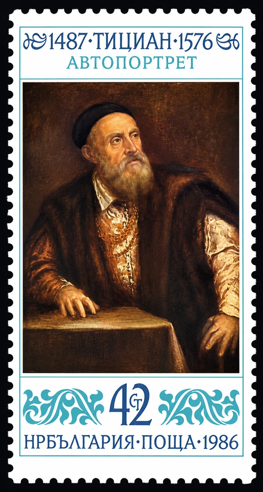
Two philatelic interpretations of Titian’s self-portrait introduce this gallery. Their differing colour and printing styles remind us that a familiar painting can acquire a new character when reproduced on a postage stamp.
Few Renaissance artists transformed the art of portraiture as profoundly as Titian (Tiziano Vecellio, c. 1488/90–1576). His portraits combined the outward signs of rank—dress, gesture and setting—with an unusually convincing sense of the sitter’s presence. Through luminous colour and subtle changes of tone, he made painted figures appear both monumental and alive.
In 1516 Titian became the official painter of the Venetian Republic. His reputation subsequently reached the courts of Ferrara and Mantua and, most importantly, the Habsburg court. He painted Emperor Charles V and members of the imperial circle, and in the 1540s also portrayed Pope Paul III. He visited Rome, where he encountered Michelangelo’s work. His journeys to Augsburg in 1548 and 1550 consolidated his position as a portraitist of Europe’s most powerful patrons.
Portraits on individual postage stamps
The following eight stamps portray Titian’s sitters, from diplomats and courtiers to members of ruling families. The two rows are deliberately offset, inviting the eye to move from one portrait to the next.
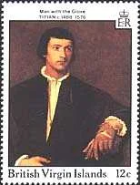
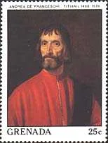
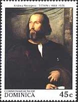
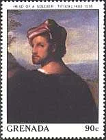
The first group emphasizes individual character and expressive gesture; the second moves towards the imposing image of Renaissance power, culminating in the portraits associated with the imperial court.
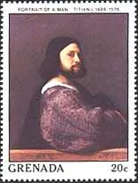
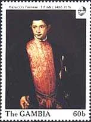
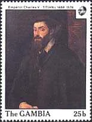
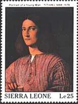
Rather than treating the background as a neutral surface, Titian could use curtains, columns or glimpses of landscape to suggest social position and dramatic depth. His handling of colour and light made the texture of velvet, silk and armour part of the portrait’s meaning. These conventions influenced European court portraiture for centuries, while some of his most searching likenesses also reveal a remarkable sensitivity to individual character.
Miniature sheets and souvenir sheets
These four philatelic miniature sheets are displayed separately from the individual stamps, so that their surrounding artwork and complete design remain visible.
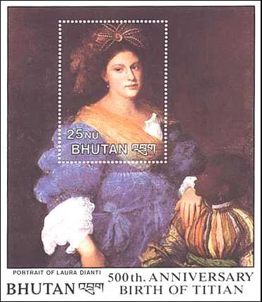
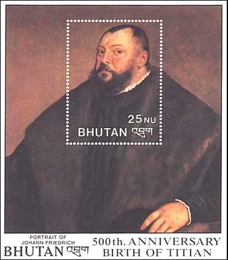
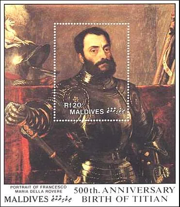
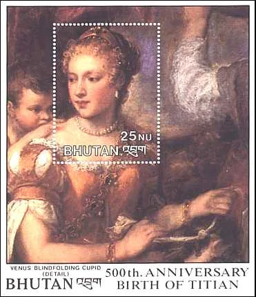
Czechoslovakia — Titian in engraved philately
The Czechoslovak miniature sheet shown below reproduces Titian’s dramatic late painting Apollo and Marsyas (c. 1570), preserved at Kroměříž. It deserves a place of its own: Czechoslovakia had a distinguished tradition of stamp engraving, and its leading engravers brought remarkable precision and artistic sensitivity to miniature works of art. This sheet is an outstanding example of that tradition.
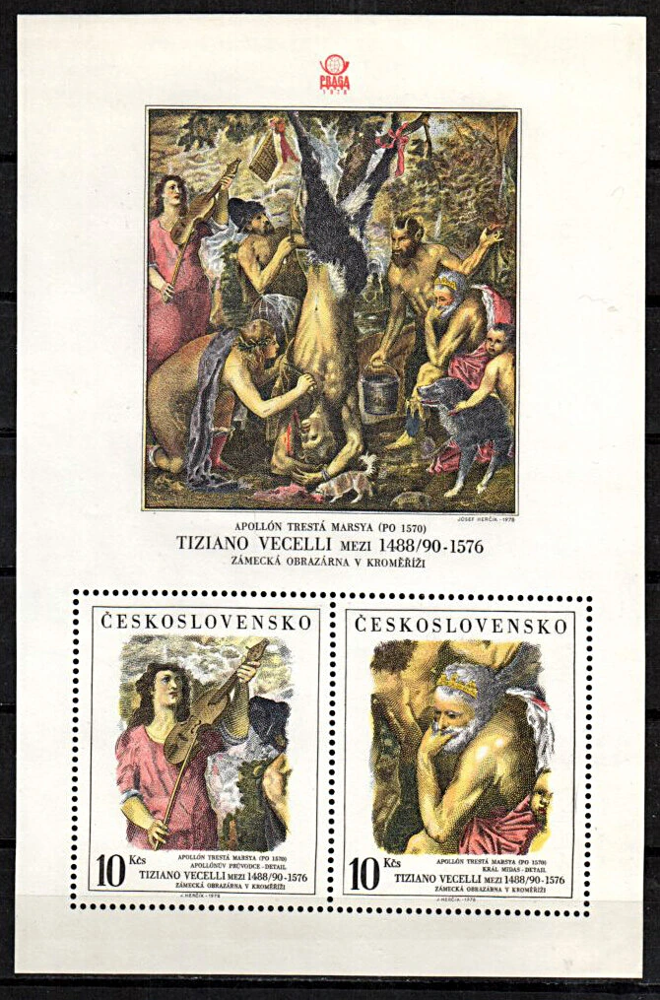
San Marino, 1966 — Four paintings by Titian
San Marino celebrated Titian with a set of four stamps in 1966. The selection broadens this portrait-focused gallery: alongside a female portrait are compositions featuring figures from mythology and Renaissance painting. Together they show the range of Titian’s subjects and the richness of his palette.
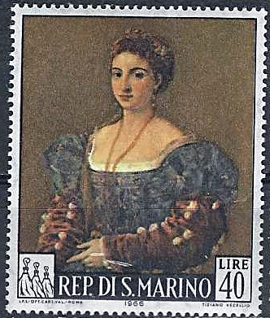
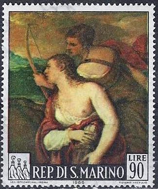
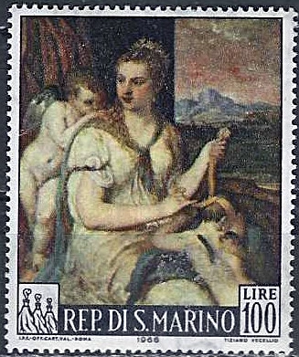
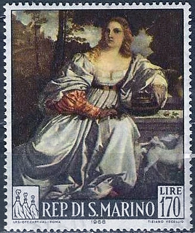
Titian’s legacy extends beyond portraiture to religious and mythological painting. The stamps reproduced here offer a small but engaging survey of the artist’s work and of the ways in which postal administrations have celebrated it.
Art on Stamps archival article, revised and expanded with new philatelic illustrations. Miniature sheets and individual stamps are shown in separate groups. The enlarged Bulgarian stamp image is a digital reconstruction rather than an exact reproduction of the original printed stamp.